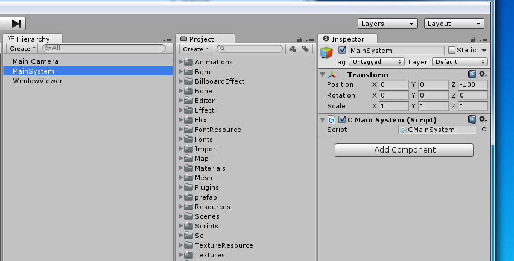

Tutorial¶
“Drop the asset bundle from the server” vs “Using streaming assets”¶
Use streaming assets (Default)¶
To stream an asset bundle:
Assets/KsSoft/Plugins/KsSoftConfig.cs, line = 27
public class KsSoftConfig : KsSoftConfigBase { static public void initialize() { m_UseStreaming = true; }this is default value.
Download the asset bundle from the server.¶
If your application has to download data via HTTP using asset bundle, please set it as follows.
Assets/KsSoft/Plugins/KsSoftConfig.cs, line = 27
public class KsSoftConfig : KsSoftConfigBase { static public void initialize() { m_UseStreaming = false; }
Compile “wra” files¶
Please be sure you have done the environment setting .
If you have done,Highlight “KsSoft/WindowResource/” folder, please select the [Right-Click] → [Export].
All “wra” files are compiled.
If errors occur, please review the environment setting .
Output all of the asset bundle¶
From the [menu] [Tools]->[KsSoft]->[Export All]->[Windows,Mac]
Note
If you try it in Mac environment, please confirm whether you install a command-line tool of the Xcode.
Note
When it is configured to use the resources , the window system exports the resource data rather than assetbundles .
Scripting / Editing¶
Start your Unity Project.
You create a wra file under a “WindowResource” folder in the project(“Assets/KsSoft/WindowResource”).
Right-click and you select [Export] on the wra file
You write “wra” scripts with your favorite editor.
A file must be named as “window_name.wra”(ex: CMessageWindow.wra). The file encoding is UTF8.
wra files/wrb files¶
wra is an abbreviation of Window Resource Ascii. This script file define Control and View for a window.
wrb is an abbreviation of Window Resource Binary.If you succeed to compile a wra file on Unity Editor, you can get the wrb file.
The include path¶
The include path is set to the following path.
Assets/KsSoft/WindowResource/include
The wra file that includ a “wr.h” automaticaly.¶
When you compile a “wra” file,”wr.h” is automatically included in your script. Common settings and constants are set to this file.
Assets/KsSoft/WindowResource/include/wr.h

The location of the compiled file.¶
*.wrb files are created under the folder “Assets/KsSoft/WindowResource/wrb”. These files are the result of the compiled your script files.
Window viewer¶
You can just preview the compiled windows in the viewer.
In addition,you can preview changes that the window was successful to compile once without stopping the viewer.
However, if you want to see the window that you have added a new, please restart once to end the window viewer.
Select the WWindowViewer scene, and run.
You can compile a your window script in the viewer scene running.
Since the list is displayed, choose a window that you want to preview.
The compilation window displays.
Assetbundles/Resources¶
The WWindowViewer directly loads wrb files which were compiled from wra files. You can check changes of wra file as soon after wra file was compiled.
But it is burdensome to put or load many wrb files on your application. This window system can bundle compiled wra files, and it can export resources(or a resource) and assetbundle files(or an assetbundle file).If your application preliminarily load the bundled file(s), you can create all windows at any time.
This bundled file can be loaded via HTTP or Resource.

Select the [Tools]->[KsSoft]->[Export Window Resource] menu on the Unity. An assetfile is output to the “assetbundles” folder.
The assebundle file name is 000_000_00010.unity3d as default.
If you want to change the file to load, please refer to here .
Using the RESOURCE = MulID of the WINDOW properties, it is possible to change the output file name.
Window data specifying the same MulID outputs by combining as a single asset.At the same time, it also updates ** version.unity3d ** storing information asset bundle.
CAssetBundleMgr loads once ** version.unity3d ** at startup, asset bundle to check whether it has been updated.
WINDOW property: RESOURCE = path It is also possible to output as an asset data using the WINDOW properties RESOURCE. The window data specifying the same path are output in a state of collectively as a single asset bundle.

About namespace¶
The window system is assigned to all KS namespaces.
using UnityEngine;
using System.Collections;
using KS;
How to handle the window in the app.¶
It can be handled in the same manner regardless to separate/not separate the window creation environment and application.
Create/Edit CMainSystem¶
public class CMainSystem : CMainSystemBase {
//==========================================================================
/*!Awake
* @brief Unity Callback
*/
new void Awake() {
Application.targetFrameRate = 60;
base.Awake();
if (m_instance != null) {
Debug.LogError("already exist CMainSystem");
return;
}
m_instance = this;
// Add Component
gameObject.AddComponent<CInput>();
gameObject.AddComponent<CSpriteFontMgr>();
gameObject.AddComponent<CTextureResourceMgr>();
gameObject.AddComponent<CWindowMgr>();
}
//==========================================================================
/*!Initialize.
* @brief initialize
*/
override protected void initialize() {
base.initialize();
}
//==========================================================================
/*!Instance.
@brief Instance.
*/
static private CMainSystem m_instance = null;
new public static CMainSystem Instance {
get {
return m_instance;
}
}
}
Register the CMainSystem the game object.¶
As described below, to create an empty game object of that MainSystem, and add a CMainSystem as a script.
CMainSystem be created by inheriting the CMainSystemBase . Game objects add to CMainSystem is set so as not to be destroyed even if the transition to the scene (see DontDestroyOnLoad).
Scripts required to use the minimum window system is the four manager
For more details, refer to here .
CInput¶
It is a script that monitors the input.This is necessary.
CSpriteFontMgr¶
It is managing the font data and font texture. This is necessary in order to render the character.
If you attach an CAssetBundleMgr the game object, it is possible to use to download the font data.
For more details, refer to here .
CTextureResourceMgr¶
It manages the texture atlas resources.This is necessary.
If you attach an CAssetBundleMgr the game object, it is possible to use to download the texture data.
For more details, refer to here .
CAssetBundleMgr¶
It manages the asset bundle.
It is used when loading an asset bundle data for sound effects,window layout data,texture resource data,font data,etc.
When not using the asset bundle, this is not necessary.
The manager is not concerned with the contents of the asset bundle.
For more details, refer to here .
CWindowMgr¶
It manages the window.This is necessary.
For more details, refer to here .
When you load from the resource¶
Load the assets were placed in the “Resources” folder.
Once the load, window data resides.
CWindowMgr cWindowMgr = CWindowMgr.Instance;
cWindowMgr.load("windows");
When you load from asset bundles¶
If you do [Export Window Resource] , following two of the file is updated.(the case of the PC, Mac & Linux Standalone environment)
assetbundles/Windows/000_000_00010.unity3d
assetbundles/Windows/version.unity3d
Check whether KsSoftConfig.httpserver is pointing to the correct HTTP server folders.
Note
If you want to change the output file name ID, please refer to here .
How to create a window¶
For example, it is assumed that defines the window in such a name
#include "default_style.h"
#define WIN_WIDTH 640
$y = 160;
WINDOW(001_000_00000) {
RESOURCE = "Assets/KsSoft/Resources/windows";
PATH = NETWORKPATH;
TEX_ID = 100_000_00000;
CAPTION = 000_000_0000;
STYLE = NOTITLEBAR|NOFRAME|ANCHOR_CENTER|TOP;
SIZE = {100},{100};
PRIORITY = PROGRESSBAR_PRIORITY;
};
METER(ProgressTotal) {
ID = 000_001_00000;
STYLE = ANCHOR_BOTTOM;
POSITION = 0,$y;
SIZE = -128{100};
TEX_ID = 0,"MTRB";
COLOR = COLOR32(255.0,255.0,255.0,255.0);
SIZE1 = -128{100};
TEX_ID1 = 0,"MTR";
COLOR1 = COLOR32(255.0,255.0,255.0,255.0);
};
$y -=64;
METER(ProgressPart) {
ID = 000_001_00010;
STYLE = ANCHOR_BOTTOM;
SIZE = -128{100},-32;
POSITION = 0,$y;
TEX_ID = 0,"MTRB";
COLOR = COLOR32(255.0,255.0,255.0,255.0);
SIZE1 = -128{100},32;
TEX_ID1 = 0,"MTR";
COLOR1 = COLOR32(255.0,255.0,255.0,255.0);
};
TEXTURE(Wait) {
ID = 000_002_00020;
STYLE = ANCHOR_RIGHTBOTTOM;
TEX_ID = 0,"LD00";
POSITION = -48,-32;
};
TEXT(Message) {
ID = 000_002_00030;
STYLE = TEXT_RIGHT|ANCHOR_RIGHTTOP;
CAPTION = 000_000_00250;
FONT_KIND = "cfn20";
POSITION = -48,32;
COLOR = 1,1,1,1;
};
Then, CWinAssetbundleLoadingBase.cs(this is C# script) is generated.
You can create a window by calling the CWinAssetbundleLoadingBase.create ().
CWinAssetbundleLoading.create();
CWinAssetbundleLoadingBase that has been automatically generated have the following functions.
static public CWinAssetbundleLoading create(CWindowBase cParent = null) {
return CWindowMgr.Instance.create<CWinAssetbundleLoading>(windowId,cParent);
}
How to get the windows that are create¶
The windows are create it can be obtained by using the A via window manager.You can get the window that is create by find .
CWinAssetbundleLoading cLoading = CWindowMgr.Instance.find<CWinAssetbundleLoading>(CWinAssetbundleLoading.windowId);
if (cLoading != null) {
//find created this window.
} else {
//can't find this window.
}
How to bring the window to the top.¶
you can bring the window to top by bringToTop.
CWindowMgr.Instance.bringToTop(cWindow);
About sound effects¶
Set the CWindowMgr.soundeffect To play the sound effect.
soundeffect is an object that has an interface that IWinSoundEffect.
public interface IWinSoundEffect {
void play(uint mSE);
}
It is one of the examples to work with CSeResourceMgr .
You get the asset bundled been SE via CSeResourceMgr (It contains a multiple of SE to one of asset bundles).
CSeResource has a IWinSoundEffect interface.(To actually play the sound, it is necessary to add a CSoundEffectMgr to CMainSystem.)
In the example below, it assumed that you are pack the sound effect of the window system in 052_000_00000.
Note
It is also possible to associate the object with your own was IWinSoundEffect.
public class CMainSystem : CMainSystemBase {
//==========================================================================
/*!Awake
* @brief Unity Callback
*/
new void Awake() {
base.Awake();
if (m_instance != null) {
Debug.LogError("already exist CMainSystem");
return;
}
m_instance = this;
// Add Component
gameObject.AddComponent<CInput>();
if (KsSoftConfig.UseAssetBundle) {
gameObject.AddComponent<CAssetBundleMgr>();
}
gameObject.AddComponent<CSpriteFontMgr>();
gameObject.AddComponent<CTextureResourceMgr>();
gameObject.AddComponent<CWindowMgr>();
gameObject.AddComponent<CBgmResourceMgr>();
gameObject.AddComponent<CSeResourceMgr>();
gameObject.AddComponent<CSoundEffectMgr>();
}
//==========================================================================
/*!Initialize.
* @brief initialize
*/
override protected void initialize() {
base.initialize();
//--------------------------------------------
// WindowMgr initilaize.
//--------------------------------------------
CWindowMgr cWindowMgr = CWindowMgr.Instance;
// Assign standard SEs.
cWindowMgr.soundeffect = CSeResourceMgr.Instance.reference(new MulId(52,0,0),true); //2D sound;
cWindowMgr.clickSE = new MulId(52,0,20);
cWindowMgr.scrollSE = new MulId(52,0,110);
}
//==========================================================================
/*!Instance.
@brief Instance.
*/
static private CMainSystem m_instance = null;
new public static CMainSystem Instance {
get {
return m_instance;
}
}
}
}
How to character resources to asset bundle and multilingual.¶
When converting from the caption ID to a string, it is converted through CWindowMgr.captiondata of interface.
captiondata is IWinCaptionData interface.
Multilingual is made possible by changing the string returned in response to the current locale.
public interface IWinCaptionData {
string find(uint mCaptionId);
}
It is one of the example of to work with :class:`CMessageDataSheetMgr<CMessageDataSheetMgr>` .
Since :class:`CMessageDataSheet<CMessageDataSheet>` has a IWinCaptionData interface, you can get the caption data in the code, such as the following.
public class CMainSystem : CMainSystemBase {
//==========================================================================
/*!Awake
* @brief Unity Callback
*/
new void Awake() {
base.Awake();
if (m_instance != null) {
Debug.LogError("already exist CMainSystem");
return;
}
m_instance = this;
// Add Component
gameObject.AddComponent<CInput>();
if (KsSoftConfig.UseAssetBundle) {
gameObject.AddComponent<CAssetBundleMgr>();
}
gameObject.AddComponent<CSpriteFontMgr>();
gameObject.AddComponent<CTextureResourceMgr>();
gameObject.AddComponent<CWindowMgr>();
gameObject.AddComponent<CBgmResourceMgr>();
gameObject.AddComponent<CSeResourceMgr>();
gameObject.AddComponent<CSoundEffectMgr>();
addManager(new CMessageDataSheetMgr(Utility.getSystemLocale()));
}
//==========================================================================
/*!Initialize
* @brief initialize
*/
override protected void initialize() {
base.initialize();
//--------------------------------------------
// WindowMgr initialize.
//--------------------------------------------
CWindowMgr cWindowMgr = CWindowMgr.Instance;
cWindowMgr.captiondata = CMessageDataSheetMgr.Instance.find(new FiveCC("WNDW"));
// Assign standard SEs
cWindowMgr.soundeffect = CSeResourceMgr.Instance.reference(new MulId(52,0,0));;
cWindowMgr.clickSE = new MulId(52,0,20);
cWindowMgr.scrollSE = new MulId(52,0,110);
}
//==========================================================================
/*!Instance.
@brief Instance.
*/
static private CMainSystem m_instance = null;
new public static CMainSystem Instance {
get {
return m_instance;
}
}
}
}
Note
It is also possible to associate the object with your own was IWinCaptionData.